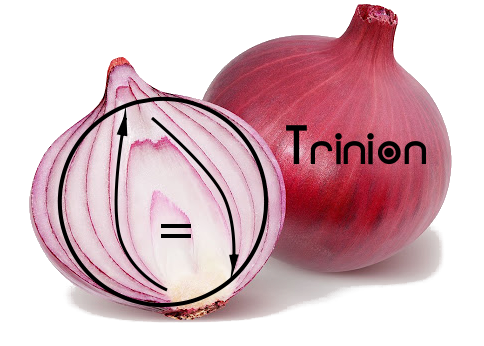

The Trinion (\(\Trinion\)) of Unïnfo
“Trinion” is pronounced “tree-nion” /ˈtrɪnjən/.[0]
“The Way produced One; One produced Two; Two produced Three; Three produced all things.”
「道生一，一生二，二生三，三生萬物。」
In Unïnfo, everything is made of three components described in three postulates:
◯ = ↑
- Postulate of Existence: There exists a Circle (◯).
- Postulate of Differentiation: There exists an Arrow (↑) different from the Circle.
- Postulate of Unification: The Circle and the Arrow are two aspects of a united body via the Equal (=)
The equation «◯ = ↑» is the One that unifies the Two opposites (◯, ↑) via the Third (=).[1] This is called the unity of opposites (☯). The Circle, the Arrow and the Equal, respectively represents the statics, the dynamics and the balances. And their unity is shown in the following three intrinsics:
- Intrinsic Static
- “Every arrow is composed of circles (⇴).”
 Just like a vehicle moving with its wheels, every change has its invariant(s), every motion has its law(s). The law of motion is invariant, the wheels of moving vehicle are invariant. Because they are invariants underlying the variants, they are called “intrinsic statics”.
Just like a vehicle moving with its wheels, every change has its invariant(s), every motion has its law(s). The law of motion is invariant, the wheels of moving vehicle are invariant. Because they are invariants underlying the variants, they are called “intrinsic statics”.
- “Every equal is in shape of circle (⊜).”
 The most familiar equality is that two objects have the same form, or the same measure, or the same shape, etc. Those forms are the statics represented by circles.
The most familiar equality is that two objects have the same form, or the same measure, or the same shape, etc. Those forms are the statics represented by circles.
 The more subtle equality is that of the opposites, just like |-1234| = |+1234|. The opposites are “equal” because they are complement, together they comprise a whole which is represented by the Circle.
The more subtle equality is that of the opposites, just like |-1234| = |+1234|. The opposites are “equal” because they are complement, together they comprise a whole which is represented by the Circle.
- Intrinsic Dynamic
- “Every circle is composed of arrows (⥁).”
 Just like a spinning top, some object looks static because it's moving in circle, its motion is looping back, it's going back and forth (🗘).
Just like a spinning top, some object looks static because it's moving in circle, its motion is looping back, it's going back and forth (🗘).
- “Every equal is in shape of arrows (⇌).” The balance between things is always a dynamic equilibrium where the exchange between them cancel out each other. For example, in mechanics, we have balance between force vectors, in chemistry, we have balance between reaction directions, etc.
- Intrinsic Balance
- The macro balance of the whole (⊜):
 For each “this” there always exists a “that” to counterbalance. If we cannot find the counterbalance, it's hidden in the meta world, eg. when something is placed in an imbalanced position, there emerges a returning force as a meta to counterbalance. The parts can be imbalanced but the whole is always balanced. Another expression of the holistic balance is the cyclic order, eg. a < b < c < a ⟹ a ~ b ~ c. However, to a selful eye, the wholistic balance can be difficult to see because the whole contains not only the visible but also the invisible, not only the objects but also the metas. So, to see the whole's balance, we must use a holistic eye.
For each “this” there always exists a “that” to counterbalance. If we cannot find the counterbalance, it's hidden in the meta world, eg. when something is placed in an imbalanced position, there emerges a returning force as a meta to counterbalance. The parts can be imbalanced but the whole is always balanced. Another expression of the holistic balance is the cyclic order, eg. a < b < c < a ⟹ a ~ b ~ c. However, to a selful eye, the wholistic balance can be difficult to see because the whole contains not only the visible but also the invisible, not only the objects but also the metas. So, to see the whole's balance, we must use a holistic eye.
- The micro balance of the selfless eye (⇌):
 In stead of extending the view to the whole, when we reduce the self to zero, just look at the contact point, the incidence point, we see the contacting parties always balance each other.
In stead of extending the view to the whole, when we reduce the self to zero, just look at the contact point, the incidence point, we see the contacting parties always balance each other.
Hence, the Unïnfo seems to be trialistic (due to the Three), dualistic (due to the Two), monistic (due to the One), but actually it's relativistic as reflected by the Zero (the Trinion, \(\Trinion\)).[1] That means the Existence is not an independent “pre-existence”, but a dynamic Existence in harmony with both Differentiation and Unification.
This property of the Trinion is called “vacantism” (Vietnamese “vô nguyên”, Chinese “無元”), which means “the absence of independent original essence”, and should not be confused with nihilism.[3] Moreover, the Trinion unifies the emptiness in the invisible world with the infinity in the visible world, thus sometimes denoted with a circled infinity symbol “♾”. The vacantism is also expressed in Dao De Jing as the following:
“The Way is vacant, yet never used up.
Immeasurable abyss it is, as the ancestor of all things!.”
「道沖而用之或不盈。
淵兮似萬物之宗。」
“The door and windows are cut out to form a room;
due to its vacancy, the room is usable.”
「鑿戶牖以為室，當其無，有室之用。」
Apendix
A. Terminology
- Trinion:

“Trinion” = “Tri-” + “union” is the union of the three components. This puts more emphasis on the unity of the three, compared to other triads like the CIE. This meaning is very much similar to the “Holy Trinity” in theism, where “Trinity” may be considered as “Tri-” + “unity”. In the course of finding a term not to be confused with the “Holy Trinity”, the “Triad” or simply the “Three” have been considered. But then the term “Trinion” was coined to reflect the harmony of both the Differentiation and the Unification as the dynamic of the Existence which is not only a “pre-existence”. And the Trinion can also be considered as the composit of layers of components as shown by the onion, which itself has a Roman root meaning “one”.
- Numbering: As idenfitiers, «◯», «↑» and «=» are numbered “0”, “1” and “2” (Chinese “二”), resp. As ordinals, «◯», «↑» and «=» are called “the First”, “the Second” and “the Third”, resp. As cardinals, «\(\Trinion\)», «◯ = ↑», «◯, ↑» and «◯, ↑, =» are called “the Zero”, “the One”, “the Two” and “the Three”, resp. In Taoism, the Zero (\(\Trinion\)) is called “the Way”, the 1st and the 2nd (◯, ↑) are called “yin”[陰,⚋] (dark, negative) and “yang”[陽,⚊] (light, positive) which are harmonized by the 3rd (=). The 3rd is the most important one with many manifestations: the Equal, the middle, the interaction, the interface, ...
- Vacantism: The Sanskrit “śūnyatā” and the Chinese “無” are usually translated to “emptiness” in English. But because of the negative meanings, “empty”, “void”, “emptiness”, “nothing”, “zero”, “null”, “nil”, it's usually confused with nihilism which is denied by both Buddhism and Taoism:
“No action but nothing is not done!”
「無為而無不為。」
Thus, the term “vacantism” is used here to emphasise the usefulness of the vacancy, just like a “vacant room” in the hotel.